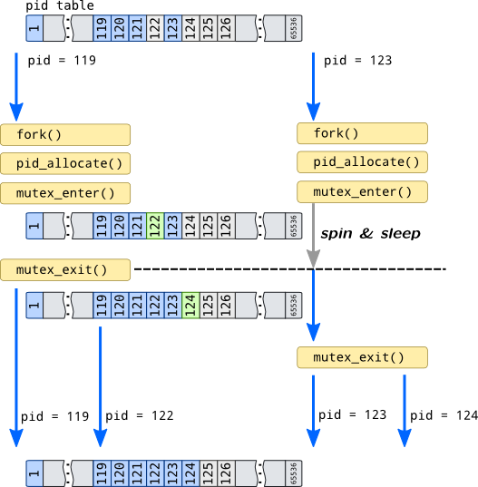

Synchronization primitives
Locks
Modern operating system kernels are multi-threaded thus they allow parallel execution of service routines and userspace threads. However, they share some common pools of resources and objects for which these threads compete and may cause conflicts if two threads request access simultaneously. If operating system won't resolve such conflict, object data may be corrupted which may cause incorrect system behaviour and eventually, system panic.
Information
For example, we have two processes in a system with pids 119 and 123 which are simultaneously executed on different CPUs (for simplicity of the example, strictly speaking processes can compete for same resource even on uni-processor system if scheduler will perform context switch while process is accessing resource or object). So those processes are simultaneously called fork(), so operating system has to create a clones of these processes and assign new pids to them. If we didn't provide mechanism that regulates accesses to pid table, they both acquire first free pid 122 which leads to creation two processes with equal process ids which makes no sense.
To prevent this, operating systems may use mutex (like it is done in Solaris) or combination of spin-lock and atomic operation (Linux). mutex_enter() call in Solaris guarantees that only one thread can be executed while holding mutex. Other threads will execute busy loop (which is called spin) or will be blocked on a sleep queue and will be removed from run queue when they call mutex_enter() for mutex that already held:

When process 119 acquires new process id, it leaves mutex by calling mutex_exit(). This function activates other process, 123, which may now access pid table, but it can't get process id 122 because process 123 is already sees changes made by process 119. So it takes next available pid which is 124.
Mechanisms that prevent such conflicts from happening like processes with equal pids in the example above are called synchronization primitives. They synchronize (even serialize) accesses to shared resources and objects, but their implementation is independent of nature of resource or object they are protecting.
Simplest primitive is an atomic. Atomics rely on processor ability to lock the system bus and prevent other processor accesses to the memory (i.e. with lock instruction prefix in x86 command set) for a single instruction thus guarantee that no other thread will perform another operation with the cell at the moment. They are widely used in Linux (but can be emulated on some architectures), and almost not used in Solaris.
Atomics allow only single machine instruction to be performed on data atomically. If more actions has to be done with guarantee that no other thread will intervene, critical section has to be implemented. First concern is how many threads are allowed in the critical section. Mutexes (mutual exclusion) allow only single thread, semaphores, which are generic variant of mutex, allow limited amount of threads, read-write locks allow multiple reader threads which do not change object but only single writer thread which exclusively modifies object data.
The second question is how to handle thread that failed competition for accessing synchronization object: it could either spin in busy loop or being put to a scheduler's sleep queue. Not all synchronization objects are suitable for sleeping: i.e. it couldn't be used in a interrupt context. Both approaches are also can be wasteful: spinning for a long time can occupy processor while dequeuing and enqueuing threads to a scheduler queue can be wasteful for short operations.
Linux prefers spin locks, but uses blocking mutexes in some places, Solaris uses universal mutex interface which provides both spinning and adaptive mutexes (adaptive mutex spins for short time and then goes to sleep phase). There are also sequental locks and Read-Copy-Upgrade synchronization policy in Linux which would be outside of our short review.
DANGER!
Linux and SystemTap doesn't provide probes for tracing locks (that are used in critical sections), and, moreover, critical sections may be used in modules generated by SystemTap. Due to that, some spinlock functions are blacklisted from tracing and require Guru mode to be enabled. We will provide name of the function for tracing locks, but do not recommend to use them in production tracing.
| Action | DTrace | SystemTap |
| Adaptive locks (which support blocking) | ||
| Acquire |
lockstat:::adaptive-acquire lockstat:::adaptive-block lockstat:::adaptive-spin |
kernel.function("mutex_lock*") kernel.function("debug_mutex_add_waiter")
|
| Release |
lockstat:::adaptive-release |
kernel.function("mutex_unlock*") kernel.function("debug_mutex_unlock")
kernel.function("debug_mutex_wake_waiter")
|
| Spin locks | ||
| Acquire |
lockstat:::spin-acquire lockstat:::spin-spin lockstat:::thread-spin |
kernel.function("spin_lock*") kernel.function("debug_spin_lock_before")
kernel.function("debug_spin_lock_after")
|
| Release |
lockstat:::spin-release |
kernel.function("spin_unlock*") kernel.function("debug_spin_unlock")
|
| Read-write locks | ||
| Acquire |
lockstat:::rw-acquire lockstat:::rw-block |
kernel.function("_raw_read_lock") kernel.function("_raw_write_lock") kernel.function("do_raw_read_lock")
kernel.function("debug_write_lock_before")
kernel.function("debug_write_lock_after")
|
| Release |
lockstat:::rw-release |
kernel.function("_raw_read_unlock") kernel.function("_raw_write_unlock") kernel.function("do_raw_read_unlock")
kernel.function("debug_write_unlock")
|
| Reader to writer promotion |
lockstat:::rw-upgrade |
- |
| Writer to reader downgrade |
lockstat:::rw-downgrade |
- |
Note
Probes ending with -spin and -block in DTrace fire at the same time as -acquire but provide information about a time spent in sleep queue or spinning.
Note
SystemTap probes that are shown with
small font
are only available when kernel built with debug configuration options such as CONFIG_DEBUG_MUTEXES.
There is a separate consumer for lockstat provider in Solaris: lockstat is a separate utility which doesn't require a script to be written.
Events
Another type of synchronization primitives is event notifications. For example, command that is expects input on tty should be queued into corresponding queue of tty device so then user puts data into it they will be activated and can begin processing of user input. Linux provides wait queues to implement such behaviour with a simplified interface to them called completion variable.
They can be traced with following script:
probe kernel.function("prepare_to_wait*"),
kernel.function("add_wait_queue*") {
if(pid() == stp_pid()) next;
state = -1;
if(@defined($state))
state = $state;
printf("[%d]%s %s:%s\n\twq head: %p wq: %p\n",
pid(), execname(), symname(caller_addr()),
probefunc(), $q, $wait);
printf("\ttsk: %p state: %x func: %s\n",
$wait->private, state, symname($wait->func));
}
probe kernel.function("wait_for_completion*") {
if(pid() == stp_pid()) next;
timeout = 0;
if(@defined($timeout))
timeout = $timeout;
printf("[%d]%s %s:%s\n\tcompletion: %pwq head: %p timeout: %d\n",
pid(), execname(), symname(caller_addr()),
probefunc(), $x, &$x->wait, timeout);
}
probe kernel.function("wait_for_completion*").return {
if(pid() == stp_pid()) next;
printf("[%d]%s %s:%s\n\tcompletion: %p\n",
pid(), execname(), symname(caller_addr()), probefunc(), $x);
}
probe kernel.function("finish_wait"),
kernel.function("remove_wait_queue") {
if(pid() == stp_pid()) next;
printf("[%d]%s %s:%s\n\twq head: %p wq: %p\n",
pid(), execname(), symname(caller_addr()),
probefunc(), $q, $wait);
}
probe kernel.function("complete"),
kernel.function("complete_all") {
if(pid() == stp_pid()) next;
printf("[%d]%s %s:%s\n\tcompletion: %p wq head: %p\n",
pid(), execname(), symname(caller_addr()),
probefunc(), $x, &$x->wait);
}
probe kernel.function("__wake_up"),
kernel.function("__wake_up_locked*"),
kernel.function("__wake_up_sync*") {
if(pid() == stp_pid()) next;
nr = -1
if(@defined($nr_exclusive))
nr = $nr_exclusive;
if(@defined($nr))
nr = $nr;
printf("[%d]%s %s:%s\n\twq head: %p state: %p nr: %d\n",
pid(), execname(), symname(caller_addr()),
probefunc(), $q, $mode, nr);
}
cat process on pipe input:
$ bash -c 'for I in a b c d e f g h;
do echo $I;
sleep 0.1; done' | cat > /dev/null
If we'd run that command, we will see similar output:
[11704]bash pipe_write:__wake_up_sync_key
wq head: 0xffff8800371f6628 state: 0x1 nr: 1
[11704]bash do_wait:add_wait_queue
wq head: 0xffff880039e11220 wq: 0xffff88001f89ff20
tsk: 0xffff88003971a220 state: ffffffffffffffff func: child_wait_callback
[11705]cat pipe_wait:finish_wait
wq head: 0xffff8800371f6628 wq: 0xffff88001ee47d40
[11705]cat pipe_read:__wake_up_sync_key
wq head: 0xffff8800371f6628 state: 0x1 nr: 1
[11705]cat pipe_wait:prepare_to_wait
wq head: 0xffff8800371f6628 wq: 0xffff88001ee47d40
tsk: 0xffff8800397196c0 state: 1 func: autoremove_wake_function
As you can see, bash triggers pipe_write() function to write a character to a pipe with a cat process. After that cat process awakens from queue with head 0xffff8800371f6628 and goes through finish_wait() function. It reads data from pipe, notifies writers that there is free space in pipe buffer that can be written into and after putting letter to /dev/null sleeps again in prepare_to_wait() function. If we hadn't redirected cat output to /dev/null, than we would see longer chain of activated processes, maybe including SSH daemon process which host pty and network activity.
In Solaris kernel event notification is performed with pair of mutex and condition variable of type kcondvar_t. It has pretty simple interface: cv_wait family of functions waits on condition variable (adds process to sleep queue) with optional timeout parameter and allowing signal handling, cv_signal notifies single thread and wakes up it, cv_broadcast wakes up all threads:
cv_wait*:entry {
self->timeout = 0;
}
cv_timedwait_hires:entry,
cv_timedwait_sig_hires:entry {
self->timeout = (arg2 / arg3) * arg3;
}
cv_wait:entry,
cv_wait_sig:entry,
cv_wait_sig_swap_core:entry,
cv_timedwait_hires:entry,
cv_timedwait_sig_hires:entry {
printf("[%d] %s %s cv: %p mutex: %p timeout: %d\n",
pid, execname, probefunc, arg0, arg1, self->timeout);
stack(4);
}
cv_signal:entry,
cv_broadcast:entry {
printf("[%d] %s %s cv: %p\n",
pid, execname, probefunc, arg0);
stack(4);
}
[15087] cat cv_wait_sig_swap_core cv: ffffc1000c9dde9c mutex: ffffc1000c9dde40 timeout: 0
genunix`cv_wait_sig_swap+0x18
fifofs`fifo_read+0xc7
genunix`fop_read+0xaa
genunix`read+0x30c
[15086] bash cv_broadcast cv: ffffc1000c9dde9c
fifofs`fifo_wakereader+0x2f
fifofs`fifo_write+0x316
genunix`fop_write+0xa7
genunix`write+0x309
Kernel also provide tools for implementing thread blocking in user space. Solaris provides set of syscalls for doing that, such as lwp_mutex_timedlock while Linux supplies universal system call called futex (fast userspace mutex).